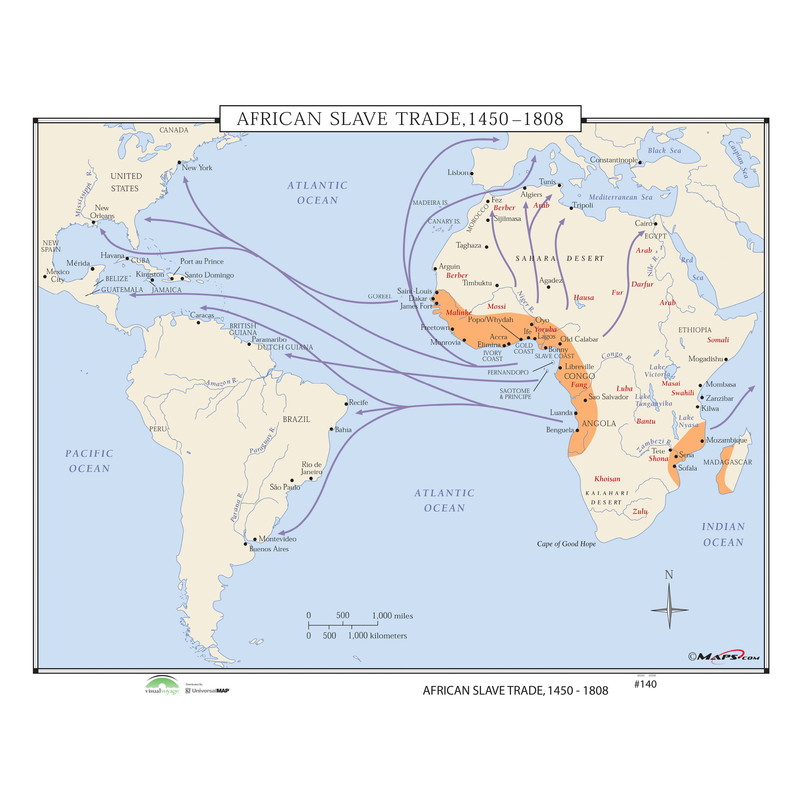

Interactive Maps
Explore African heritage, migration patterns, and cultural connections across history



Legend
Ancient Kingdoms & Empires
Departure Points
Arrival Destinations
Modern African Countries
Explore African Heritage & Diaspora
Click on markers in the maps above to discover the rich history and global connections of African peoples.
100+
Ancient Kingdoms
12.5M
People Enslaved
200M+
Global Diaspora
6
Continents